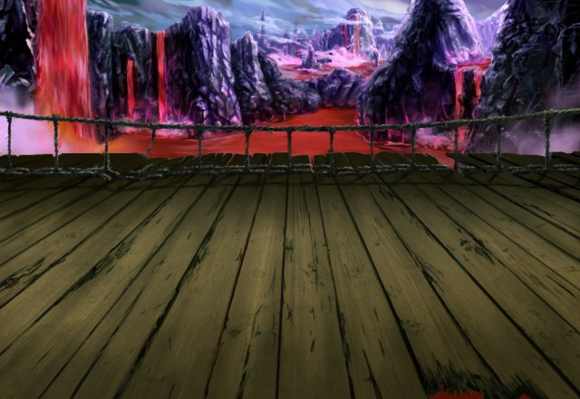

セリア
フー、それにしても まだまだ先は長そうね……。
セリア
ティリス、女神の力で ルシアス様の所まで一瞬で行けないの？
ティリス
こんなに大勢連れて そんな離れた場所まで飛んだら
ティリス
どこに行っちゃうか わからないんだから！
？？？
どうやらお前は 人間たちに付いたようだな。
アーク
お前はルシアス様の命に逆らい 人とともに進むのだな。
セリア
アンタ、 ルシアス様の神徒のクセにバカなの？
セリア
どうしてティリスが ルシアス様に逆らったことになるのよ？
セリア
私たちをルシアス様の元に 案内してくれているだけよ。
アーク
ならば、ルシアス様の もうひとつのお言葉も覚えているな？
アーク
ルシアス様のご意志に逆らう者に 罰を与えるということを。
アーク
お前たちは英雄気取りで ルシアス様の元に向かうのかもしれないが
アーク
ルシアス様は人間を滅ぼす決断を するのかもしれないのだぞ。
アーク
未だ力は完全に戻っていないため この地を離れることはできないが
アーク
それでも、四堕神より 遥かに強大な力を持っていられる。
アーク
それでも、お前たちは 前に進むというのか？
カル
それに、俺たちは ルシアス様と争うつもりはない。
カル
ただ、人間の世界の未来について 話し合いたいだけだ。
セリア
ルシアス様が人を滅ぼすとか 簡単にやらないと思うわよ。
セリア
そもそも、人間を救ってくれたのが ルシアス様なんだから。
アーク
ならば、この先にある “神託の塔”に来るがいい。
アーク
お前たちがルシアス様にお会いするのに 値するだけの人間かどうかな。
ルジーナ
お前こそご主人の意思に 逆らってるんじゃないのか？
ルジーナ
俺たちを連れて来いってのが ご主人様の命令だろ？
アーク
フン、俺も元人間として 人間が滅びることは避けたい。
セリア
こっちにはティリスもいるんだし 別に放っておいてもいいと思うけど？
カル
いや、一応、気になることもあるんで “神託の塔”とやらに行ってみよう。
カル
ルシアス様と話す前に 情報は多い方がいいからな。
ルジーナ
それにしても あのアークとかいうヤツ……。
ルジーナ
この先、いつ面倒なことが起きるか わからねー！
ルジーナ
そこら辺でくたばったりしたら 承知しねーからな！